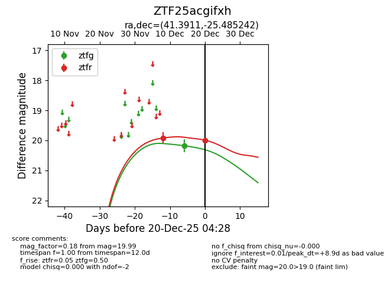
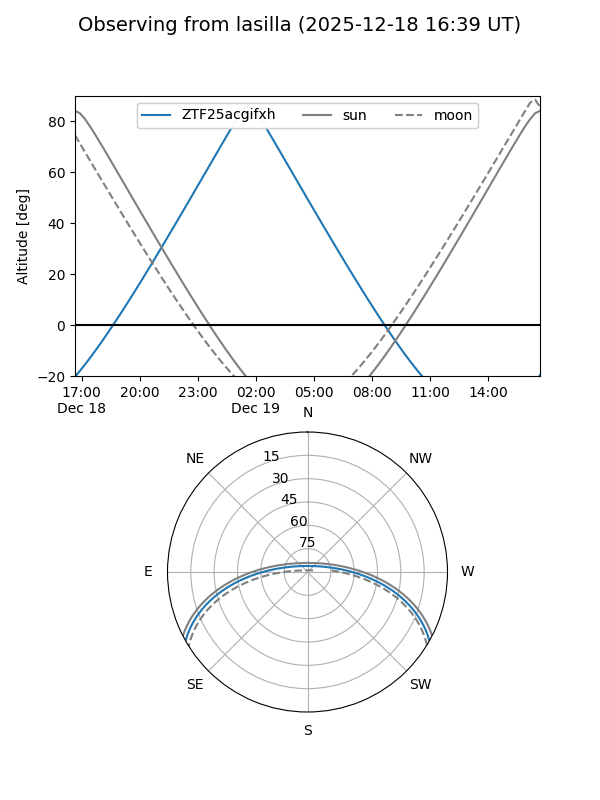
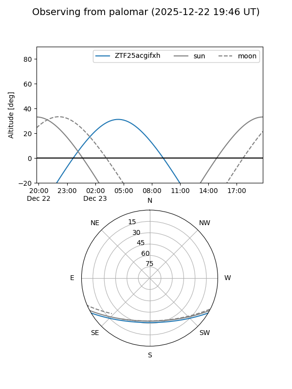
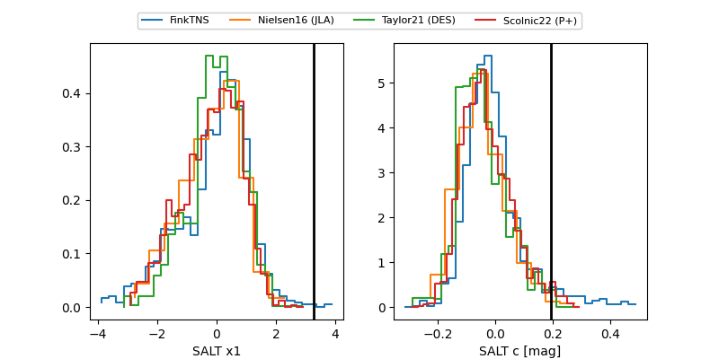

ZTF25acgifxh
Target ZTF25acgifxh at 2025-12-20 04:29
Aliases and brokers:
FINK: fink-portal.org/ZTF25acgifxh
Lasair: lasair-ztf.lsst.ac.uk/objects/ZTF25acgifxh
ALeRCE: alerce.online/object/ZTF25acgifxh
alt names
ZTF25acgifxh (ztf,fink_ztf)
Coordinates:
equatorial (ra, dec) = 41.3911,-25.48524
equatorial (HMS+DMS) = 02:45:33.87,-25:29:06.87
galactic (l, b) = (215.7624,-64.42488)
Flags:
Photometry:
last ztfg=20.18, ztfr=19.99
1 ztfg, 2 ztfr detections
Lightcurve

Visibility


Additional plots
